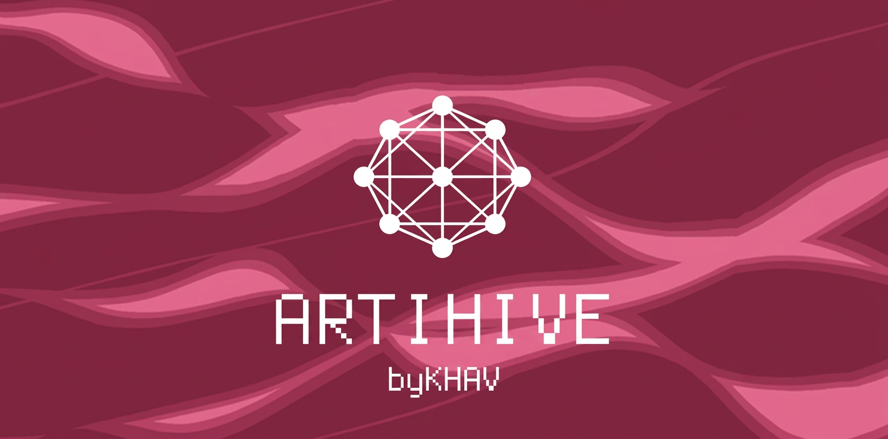

8 VOICESdigital swarm
4 FM PAIRSmutual modulation
DRONE + POLYtwo performance modes
USER ARP16 programmable steps
HYPER LFOOR / AND logic
DUAL DELAYsmooth TIME changes
01 / SIGNAL
ARTIHIVE is a digital artifact inhabited by a swarm of eight signals. They interact and form a self-organizing system—like a hive or an ant colony.
8 VOICESDigital swarm
4 FM PAIRSMutual influence
1 SYSTEMSelf-organization
02 / INTERFACE
One panel.
Eleven perspectives.
Every page keeps four direct controls and a live visual field. Select a page to inspect its role.

01 / 09
DRONE
Eight independently tuned voices, four FM pairs and a live output oscilloscope.
TUNEFINESHARPMOD
03 / DISORDER
Hold REC.
Release the swarm.
Hold REC for more than 0.7 seconds to enter DISORDER. While the button remains held, parameters follow independent smooth trajectories of roughly ten seconds, and one discrete switch changes every second.
The interface becomes a full-screen cellular field that reacts to the output level. Release REC to return to the interface. Press SAVE + SEQ to undo the latest DISORDER session.
REC > 0.7 sRELEASE · RETURNSAVE + SEQ · UNDO
LIVE CELLULAR FIELD
04 / EMULATOR
Play before
you flash.
The browser emulator runs the unchanged ARTIHIVE firmware package with its screen, controls and sound.
05 / DOCUMENTATION
Read deeper.
06 / INSTALL
Install with
extra care.
HARDWARE TESTING NOTICE
I have not yet had an opportunity to test the installer on physical hardware. For now, I recommend installing ARTIHIVE through The Firmware Hub instead of using the experimental installer on this website.
07 / CONTINUATION
Thank you for becoming
part of the swarm.
— KHAV · 2026
Thank you to everyone who has installed ARTIHIVE, played it and allowed this digital artifact to exist beyond my own device.
ARTIHIVE is constantly changing. I continue to revise its sound, behavior and interface as I learn what the instrument can become. Version 2.0.3 is the most stable release so far—and the first version that currently feels right to me.
Not every function has been fully tested yet. MIDI CC behavior is one of the areas that still needs broader hardware testing. I will keep working on ARTIHIVE, correcting it and expanding this instrument.
2.0.3CURRENT STABLE RELEASE
ONGOINGSOUND · BEHAVIOR · INTERFACE
TESTINGMIDI CC · HARDWARE